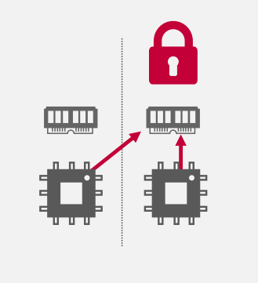
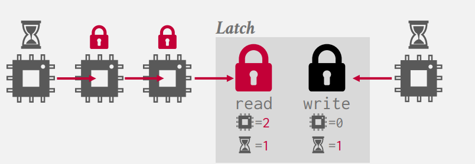
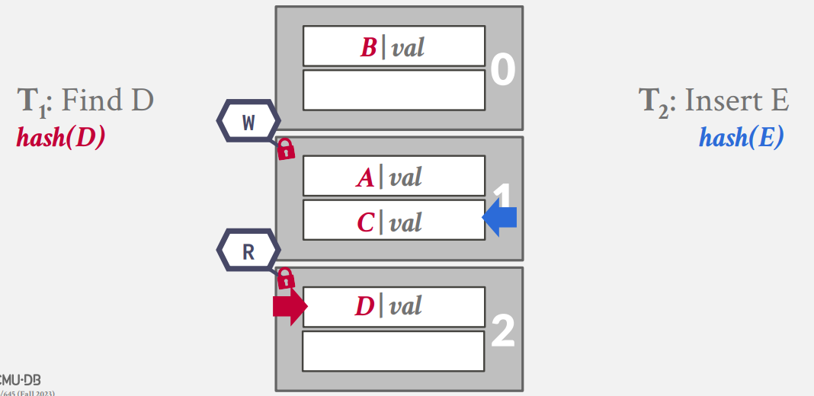
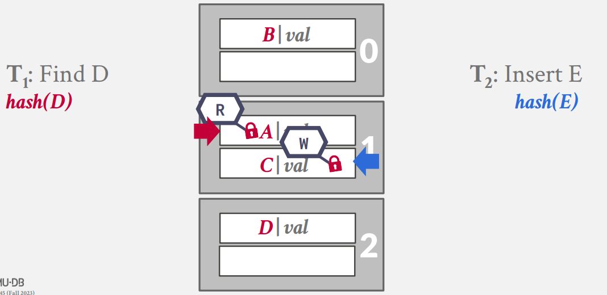
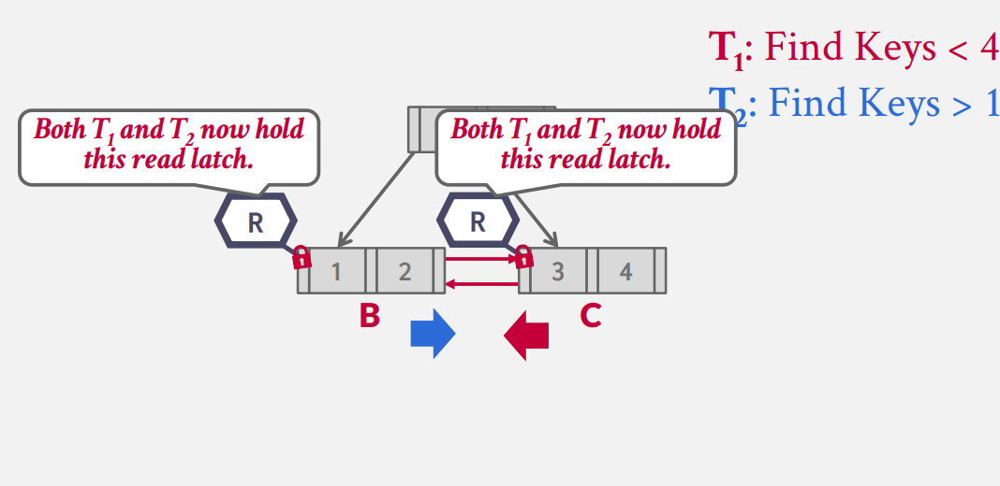

Concurrency Control¶
我们至今讨论的所有数据结构都是基于单线程的假设，但对于 DBMS 而言，我们有时更需要多线程的访问支持来更好的利用现代CPU多核的特点。
Concurrency Control Protocol¶
为了使得并行的线程保证读写的正确性，我们需要遵守一个统一的 并发控制协议 ,但设计并发i控制协议的准则可能各不相同。
-
Logical Correctness： 线程能够准确的读取它期望读取的数据吗？
-
Physical Correctness：数据对象内在的物理存储是正确的吗？
Locks vs Latches
| Locks | Latches | |
|---|---|---|
| Seperate | Transactions | Workers |
| Protect | Database Contents | In-Memory Data Structures |
| During | Entire Transactions | Critical Sections |
| Modes | Shared, Exclusive, Update,Intention | Read, Write |
| Kept In | Lock Manager | Protected Data Structure |
我们的 Latch 存在两种模式:
- Read Mode : 所有的线程都可以自由的读取数据，因为此时不会发生冲突；任何线程都可以申请 Read Latch ,无论其他线程是否拥有Read Mode 的Latch
- Write Mode : 仅有一个线程都可以写数据；当其他线程拥有某种Mode 的 Latch，任何线程都不可以申请 Write Latch
Latch Implementations¶
TAS 的效率较高，但是其对于缓存与操作系统不友好(1)；一个在C++中实现的例子是std::atomic<T>
-  这里存在一个 NUMA 的问题，即如果一个cpu想访问另一个cpu的缓存，将会存在较大的延迟
这里的 Mutex 互斥锁是最易实现的一种（C++的 ptread 已经帮你实现了）
但由于Mutex的实现有操作系统的参与，这里的Latch效率低下且不可控。
这里的 Latch 允许并行的读，并且维护一个 read/write 的优先级队列。

例如，在图中的例子里，当Reader持有Latch时（可以有多个Reader，但是有一个上限），Write将会在队列中等待，超出上限的 Reader 也会等待。
Hash Table Latching¶
哈希表上的 Latch 非常好实现：
-
所有的线程在哈希表上都按照同一方向来遍历和查找（这保证了第二条性质）并且一次仅会访问同一页/槽
-
死锁不可能发生
如果我们需要调整表格的大小，我们只需要在全局上设置一个Write Latch即可。
另一个问题是我们的Latch的粒度应该是多少（即，一个Latch究竟管辖多大的范围？）
-
Page Latch

-
Slot Latch

B+ Tree Latching¶
Basic Algorithm¶
我们在B+树上的协议需要满足支持多个线程同时对数据结构进行修改/访问
- 获取父节点的 Latch
- 获取子节点的 Latch
- 释放父节点的 Latch 如果父节点当前是安全的
一个节点是安全的当前仅当操作后它不会分裂或者合并
- 对于插入而言，节点不是满的
- 对于删除而言，节点比半满多
所以对于读操作而言，我们首先在子节点上获取Read Latch，然后释放父节点的Latch，直到我们找到我们所需的节点为止。
对于写操作而言，我们从根节点开始获取 Write Latch ，然后检查子节点是否是安全的，如果是安全的，我们将释放所有祖先节点的Latch
但我们可以发现，对于所有的操作，我们都需要先获取根节点的 Latch 才能够进行，此时这里便成为多线程的一个瓶颈。所以我们亟需一个性能更好的 Latch 的协议与算法来保证多线程能够以最佳的效率进行。
Better Optimization¶
Bayer and Schkolnick 提出一个更加‘乐观’的算法。事实上，由于我们的节点存储在页上，所以一个节点的操作往往不会发生任何的分裂/合并。
对于读操作而言，没有发生改变；对于写操作而言，我们总是以读的方式来访问内部节点；而以写的方式访问叶节点。如果我们发现叶节点是不安全的，那么我们从头开始按照读的方式重新访问获取Latch。
Deadlock¶
当所有的线程都以从上往下的顺序访问时，我们不会发生任何的死锁的情况。但如果一个线程从兄弟节点访问呢？

由于 Latch 并不保证和死锁的检测，所以这里唯一避免死锁的方法是更好地代码实现。叶节点的兄弟节点的Latch获取需要支持一个 non-wait Mode ： 这意味着任何试图从兄弟节点获取 Latch 的请求都不会等待。如果一旦我们发现从兄弟节点的请求 Latch 失败都会导致线程终止掉自己。
事实上在这里存在更多的考量，当我们发现无法从Sibling 节点申请Latch的时候，我们有三种选择：1. Wait 2. Kill itself 3. Kill Others 对于第一种选择，我们并不知道这一个Latch将会被占有多久，这对于我们的查询而言是十分不安全的（用户可能因此而等待若干时间）。对于第三种考量，由于线程间并不知道对方在做什么（也许操作系统知道，但是任何涉及操作系统的调度都不是好的设计），所以这样随意地操作也是不安全的。
因此我们只剩下了唯一的选择：因为我们只知道自己在做什么，所以我们只能终止自己这个进程。（也许这里涉及到操作的回滚）
Conclusion¶
设计一个能够安全的支持并行操作的数据结构一直是一个“臭名昭著”的问题。我们在本节中仅仅涉及了B+树上的一些技巧，事实上还有更多更加高级、精妙的有关 Tread-Safe 的技巧。